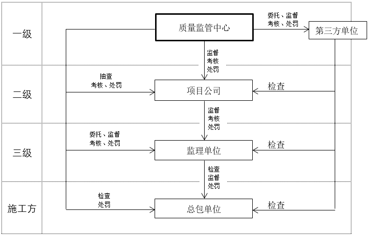

商业地产项目质量管理实行三级管控，第一级为质量监管中心；第二级为项目公司；第三级为监理单位。

工程总包对项目质量安全负全部责任，并不因万达方对项目进行监督、管控而减轻工程总包的任何责任。
| 参建单位 | 主要职责 |
| 万达 |
1.依据BIM平台监督项目材料设备使用，进行项目日常检查、月度检查、开业自检、开业联检、开业验收、移交验收、质保期到期前联合检查； 2.重点管控地下四大块工程； 3.监督工程质量问题整改； 4.委托第三方实测实量单位对现场质量进行检查 |
| 设计总包 |
1.确保BIM模型满足万达建模标准质监技术要求； 2.按合同对工程进行质量检查； 3.参与开业验收 |
| 工程总包 |
1.对总承包合同范围内建筑工程施工质量负全部责任，分包商施工质量责任由总承包商承担； 2.负责材料设备进场检查验收、复试； 3.对工程质量进行自检，报监理验收，进行开业自检； 4.对地下四大块工程进行重点检查验收； 5.对工程质量问题进行整改并回复； 6.参加项目周/月度检查、开业联检、开业验收、移交验收、质保期到期前联合检查； 7.为万达、监理方、第三方实测实量单位进行工程检查验收提供条件 |
| 监理单位 |
1.依据合同及BIM平台对项目进行工程监理，负监理责任； 2.对材料设备进行进场验收、见证取样和使用审批； 3.对工程进行旁站、平行检查和质量验收，进行开业自检； 4.对地下四大块工程进行重点检查验收； 5.监督、复查工程质量问题整改并确认； 6.参加项目周/月度检查、开业联检、开业验收、移交验收 |